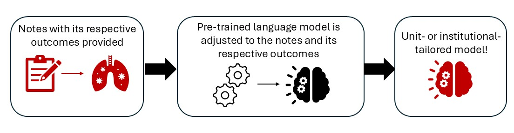

Joint finetuning¶
Joint (semi-supervised) single-outcome finetuning trains a separate model for each postoperative outcome of interest. The model jointly learns the structure of your clinical notes while learning to predict the outcome, ensuring it captures both the linguistic patterns of your institution's documentation style and the clinical features that drive your specific outcome. Unlike multi-task finetuning, this workflow is catered to a single specific outcome rather than multiple outcomes.

joint_finetune¶
surgicalplan.joint_finetune(df, text_col, outcome_col, output_dir="joint_finetuned", base_model="emilyalsentzer/Bio_ClinicalBERT", hf_token=None, max_length=512, lambda_constant=2, mlm_probability=0.15, val_fraction=1/8, weight=None, training_configs=None)
Fine-tune Bio+ClinicalBERT (or any encoder / BERT-based model) on self-supervised loss jointly with a single binary classification head for one outcome.
Parameters¶
df(pandas.DataFrame, required): Must containtext_colandoutcome_col.text_col(str, required): Name of the free-text column.outcome_col(str, required): Name of a single binary (0/1) outcome column. Rows with NaN in this column are dropped before training.output_dir(str, optional): Directory to save the fine-tuned model, tokenizer, and metadata. Also used as the HuggingFace Traineroutput_dirfor checkpoints and logs. Defaults to"joint_finetuned".base_model(str, optional): HuggingFace model id to start from. Any BERT-architecture model should work. Defaults to"emilyalsentzer/Bio_ClinicalBERT".hf_token(str | None, optional): Optional HuggingFace token for gated/private base models. IfNone, uses the cached CLI login when present.max_length(int, optional): Token sequence length for tokenization. Defaults to512.lambda_constant(float, optional): Weight on the auxiliary (BCE) loss relative to MLM loss. Total loss = MLM + λ · BCE. Defaults to2.mlm_probability(float, optional): Token masking probability for MLM. Defaults to0.15.val_fraction(float, optional): Fraction ofdfheld out for validation during training. Defaults to1/8.weight(torch.Tensor | None, optional): Optionalpos_weightforBCEWithLogitsLossto handle class imbalance. Useful for rare outcomes (e.g.,torch.tensor([20.0])for ~5% positive prevalence). Defaults toNone.training_configs(dict | None, optional): Any keyword arguments accepted bytransformers.TrainingArguments. User-provided values override the defaults. Defaults toNone, in which case the defaults below are used.
Default training_configs
Returns¶
str — the output_dir path. After training, this directory contains:
pytorch_model.bin(ormodel.safetensors) — model weightsconfig.json— model architecture configtokenizer.json,vocab.txt,tokenizer_config.json,special_tokens_map.json— tokenizerjoint_metadata.json— recordsoutcome_col,text_col,max_length,base_model,lambda_constant,num_tasks(always 1), andworkflow, so inference can recover them automaticallycheckpoint-*— per-epoch training checkpoints (can be deleted after training)logs/— TensorBoard-compatible training logs
Example¶
from surgicalplan import joint_finetune
joint_finetune(
df,
text_col="clinical_note",
outcome_col="DVT",
output_dir="DVT_model",
training_configs={
"num_train_epochs": 3,
"per_device_train_batch_size": 16,
"evaluation_strategy": "steps",
"eval_steps": 100,
"logging_steps": 100,
"learning_rate": 2e-5,
},
)
For a rare outcome, supply a positive-class weight to address class imbalance:
import torch
joint_finetune(
df,
text_col="clinical_note",
outcome_col="PE",
output_dir="PE_model",
weight=torch.tensor([20.0]), # ~5% positive prevalence
)
get_outcome_score¶
surgicalplan.get_outcome_score(model_name, text, max_length=None, device=None, hf_token=None)
Score a text scenario (or list of scenarios) against the single auxiliary head of a joint-finetuned model.
Parameters¶
model_name(str, required): Path to a directory saved byjoint_finetune.text(str | list[str], required): One scenario string, or a list of them. Determines the shape of the return value.max_length(int | None, optional): Token sequence length. Defaults to the value used during fine-tuning, recovered fromjoint_metadata.json, otherwise512.device(str | None, optional):"cuda","cpu", orNoneto auto-detect.hf_token(str | None, optional): Optional HuggingFace token for gated/private models.
Returns¶
floatwhentextis a string — the predicted probability for the trained outcome, in[0, 1].list[float]whentextis a list — one probability per input, in the same order.